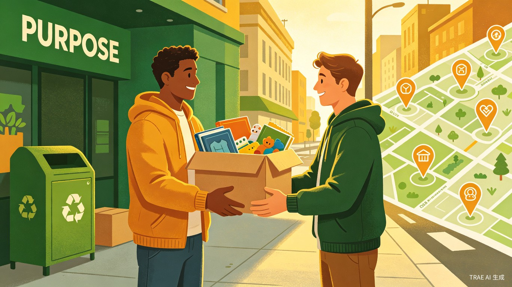

余温计划是一个基于地理位置的社区闲置物品循环共享平台，通过 AI 匹配、信用积分和便捷的同城流转机制，让每一件闲置物品都能找到需要它的人，减少浪费的同时传递社区温暖。
每个家庭都有大量闲置物品——孩子穿小的衣服、看完的书籍、替换下来的家电，扔掉可惜，卖掉麻烦，捐赠又不知道送给谁。与此同时，很多低收入家庭、乡村学校、流浪动物救助站却急需这些物资。供需之间，只差一座桥梁。
去年搬家时，我整理出三大箱完好的童书和玩具，想捐赠却找不到合适的渠道。小区群里问了一圈，最后大部分还是进了垃圾桶。几天后，我在朋友圈看到山区小学缺课外书的求助，那一刻特别心痛——物品就在城里，需求就在山里，为什么连不起来？
一款微信小程序，包含AI 智能匹配、信用积分体系、同城闪送/自提、公益追踪四大核心模块，让闲置物品从"捐不出去"变成"秒级对接"。
城市中有闲置物品处理需求的家庭（尤其是有孩子的家庭、租房年轻人），以及有物资需求的群体（低收入家庭、乡村学校、公益组织、流浪动物救助站等）。
整理出闲置衣物，拍照上传，AI 自动匹配附近需要的人
家具、家电等大件物品，一键发布，同城自提或公益组织上门回收
童书、玩具、婴儿用品，精准对接有同龄孩子的家庭或乡村幼儿园
公益组织发布物资需求清单，系统自动推送给匹配的潜在捐赠者
拍照即识别物品类型、新旧程度，自动匹配附近最需要的接收方
捐赠者和接收方双向评价，积累信用分，高信用用户享优先匹配
基于 LBS 推荐最近自提点，或对接同城跑腿实现低成本配送
每件物品流转全链路可追踪，接收方上传使用照片，捐赠者看得见温暖
减少物品废弃和资源浪费，推动循环经济，助力碳中和目标
缩小贫富差距，让物资流动起来，构建互助友爱的社区文化
将闲置物品匹配时间从平均 2 周缩短至 2 小时，流转效率提升 90%
采用轻量化架构，确保低门槛使用和高并发支持：
不建仓库、不养物流团队，完全依托用户自提、同城快递和合作公益组织网络，平台仅提供匹配和信用服务。
捐赠者获得整理空间和情感满足，接收者获得所需物资，平台积累信用数据，物流企业获得增量订单，公益组织扩大影响力。
沉淀社区物资需求热力图，为政府公益决策、企业 CSR 方向提供数据支持，形成社会价值闭环。